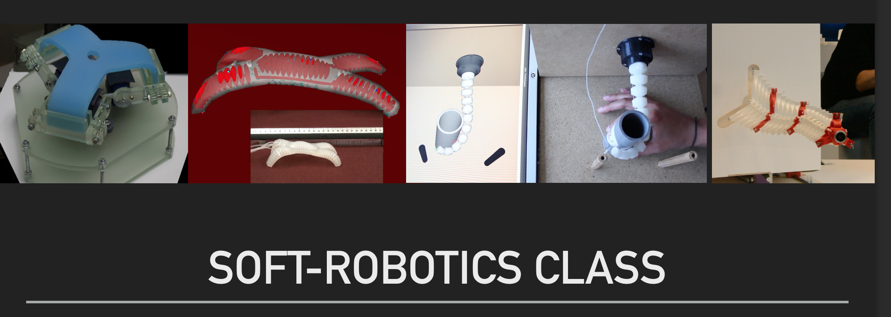

SOFA Basics
Caduceus.scn
ChainHybrid.scn
Friction Contact.
SoftRobots
First step tutorial
Pneumatic finger gripper (step6).
Cable based finger gripper (step 4).
Pneu net gripper tuto.
Cable based finger gripper.
Tripod session 1
Tripod tutorial.
S90Servo prefab
Arm prefab.
Tripod session 2
Hardware access.
Inverse control.
Maze motion planning.
Inverse control & contact.